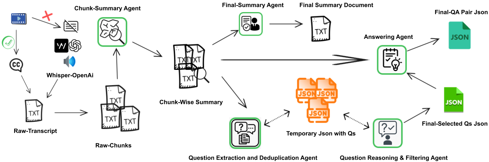
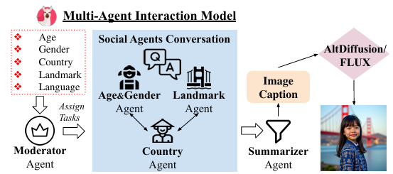
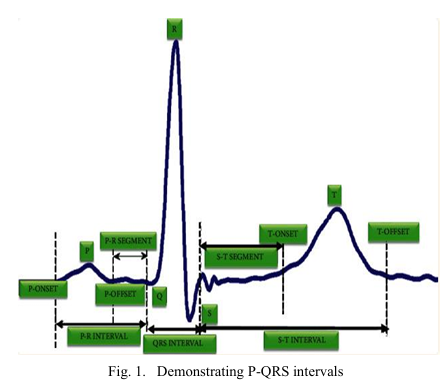
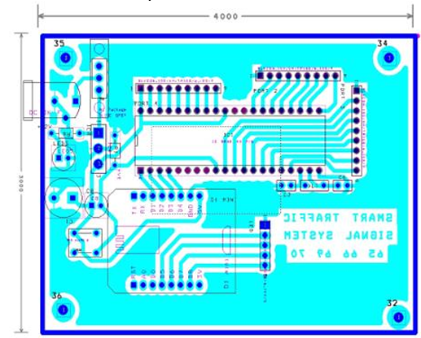
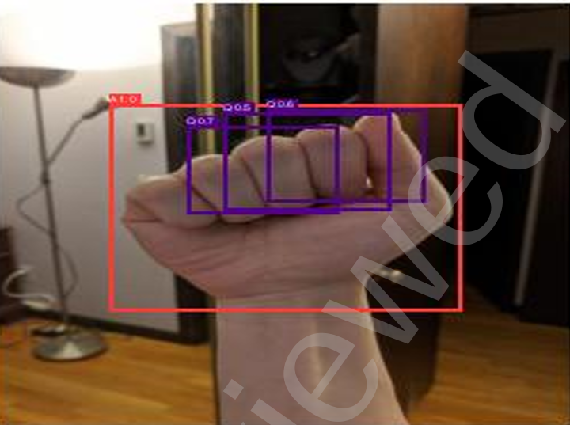

Mentorship for All: Multi-Agent Multilingual Long-Form Video Question Answering for Mentorship Applications

Published: Under Review – Experimentation in progress, release soon
This research introduces a multi-agent framework for multilingual question-answering that efficiently extracts insights from long-form video content like podcasts and mentorship sessions. By using specialized agents for tasks like summarization and filtering, the framework significantly outperforms a single-agent baseline. The system processes audio directly from sources in languages including English, Romanian, and Marathi, making knowledge from global mentors more accessible and improving answer faithfulness by over 1.6 points on a five-point scale.
MoSAIG: Multi-Agent Multimodal Models for Multicultural Text to Image Generation

Published: Under-Review 2025
This paper presents MosAIG, a multi-agent framework leveraging LLMs with distinct cultural personas to
enhance multicultural image generation. The authors contribute a dataset of 9,000 images spanning diverse
countries, age groups, genders, landmarks, and languages. Experiments demonstrate that multi-agent
interactions outperform single-model approaches across multiple evaluation metrics, offering new insights
for culturally inclusive AI systems. Dataset and models are released publicly.
ECG Classification Using Machine Learning on Wave Samples for the Indian Population

Published: 2023 – IEEE International Conference on Advancement in Computation & Computer Technologies (InCACCT)
This study proposes machine learning models for ECG rhythm classification tailored to the Indian population, using only 3 leads instead of the conventional 12, thereby reducing cost and complexity. The models classify cardiac rhythms as normal or abnormal directly from ECG wave samples. Multiple algorithms are compared for accuracy, using a dataset collected from hospitals in Nagpur city, making the work both practical and population-specific.
Design and Implementation of a Dynamic Traffic Signal System with Digital Circuit and IoT Integration for Efficient Traffic Management

Published: 2023 – IEEE IIT-Delhi Top Conference, 14th International Conference on Computing Communication and Networking Technologies (ICCCNT)
This research proposes a dynamic, sensor-based traffic signal system to overcome inefficiencies of static traffic management in India. The system adapts signal timing to real-time traffic density and incorporates an IoT-based emergency override for ambulances and VIP movement. A decoder-driven digital circuit, implemented in Verilog and simulated with a Python GUI, enables multiple active lanes without interference. Results show improved traffic flow, reduced congestion, and faster emergency response, offering a scalable solution for modern cities.
Performance Analysis of the YOLOv5 Algorithm for American Sign Language Detection

Published: SSRN Journal, 2022
This paper analyzes the YOLOv5 algorithm for American Sign Language (ASL) detection, evaluating its performance across TensorFlow and PyTorch frameworks on devices such as Intel processors and Raspberry Pi. The study identifies alphabets with higher false positive/negative rates and compares model accuracy under different setups. Results indicate that Raspberry Pi with TensorFlow fp16 at 320 image size and weight is the most efficient configuration for practical deployment.
Point of Care Device for Measurement of Vital Parameters
Published: Springer, 2023 – Smart Trends in Computation and Communication (SmartCom 2023 International Conference)
This research proposes a solution to improve healthcare access in remote areas by developing a portable, non-invasive device. This device is capable of measuring vital health parameters like body temperature, ECG, and PPG, and then calculating heart rate and blood pressure. The study focuses on creating a compact, low-cost prototype to enable early diagnosis and reduce the need for patients to travel to city hospitals, with further recommendations for improving accuracy. (Patent Granted)